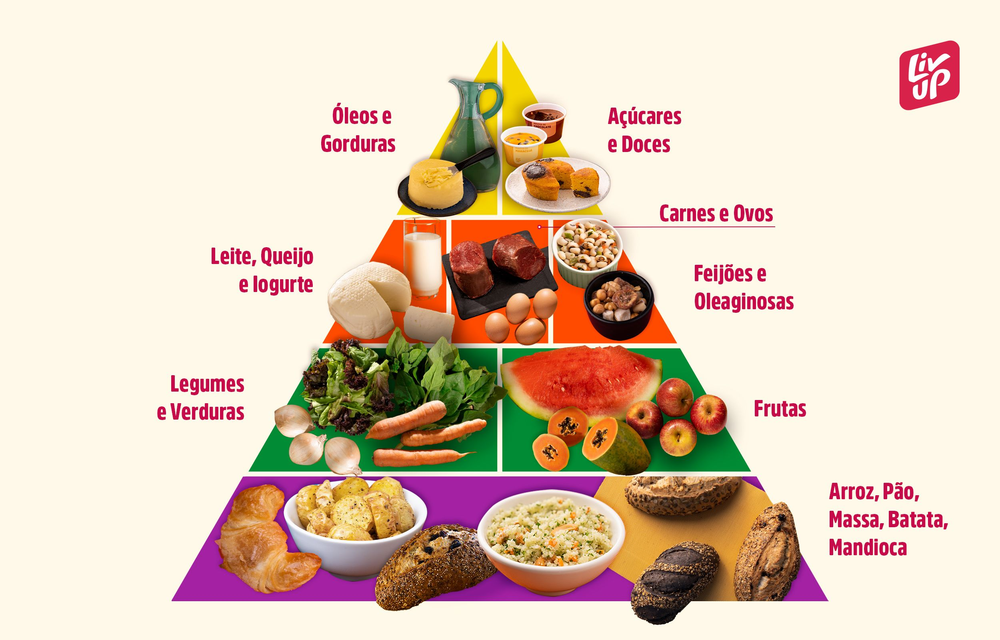

Alimentação saudável
Na Confeitaria do Sesc Senac, a saúde e o bem-estar são priorizados. Com nutricionistas especializados, oferecemos opções saudáveis e equilibradas, respeitando necessidades alimentares específicas. Alimentos frescos, orgânicos e de alta qualidade são cuidadosamente preparados em ambiente higiênico, garantindo sabores deliciosos e nutritivos.

Benefícios da Alimentação Saudável no Ambiente Escolar
- Melhora o desempenho acadêmico.
- Reduz o risco de doenças crônicas (obesidade, diabetes, hipertensão).
- Promove hábitos saudáveis para a vida toda.
- Aumenta a energia e concentração.
- Ajuda a prevenir problemas de saúde mental.